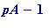
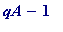

An RSA public -key ( digital signature ) demonstration
Here, with time as the enemy, I can only convey the
essential
spirit
of the basic RSA idea.
Suppose 'Alice' wishes to send a message ("Hi Bob, let's meet. Alice") to Bob; then not only can she do so - in a manner similar to that you have already seen in the PH example - but she can give him a
gaurantee
that she
really is
the author of the message (her
digital signature
comes into play here...)
Important note. Her message to him is NOT a
secure
one, in the sense that anyone who intercepts her message, and who
knows
her
public
-key, may then read her message to Bob. Also, although he can also send her a message (using her public-key) - perhaps 'Thanks Alice. Where? When? Bob' -
she
however can have
no
gaurantee that
he
was the author, since some
impostor
- knowing her public-key -
could
have sent it.
(In case, as a novice, my reader objects along the lines of '
why bother with all of this public and private key stuff, why not just keep the keys secret and save a lot of bother...
', well that brings up a whole host of problems - not least the so-called transportation problem (how - in a crisis - can one securely deliver secret keys over a distance?) which I could not even begin to discuss here...)
First of all Alice chooses two 'large' primes (throwing caution to the winds):
> pA := nextprime(10^60 + 1234567*rand()^5);
> qA := nextprime(10^65 + 8765439999*rand()^5);
>
forms their product (her public modulus, which she will use with her private ' d ', constructed in a moment):
>
nA := pA*qA;
>
computes the 'Euler phi-value' of the integer
nA
(that integer plays the same role in the RSA method as
(
 )
did in the PH case, and I ask my reader to note the
apparently trivial
remark that its calculation requires
knowing
'
pA
' and '
qA
'
):
)
did in the PH case, and I ask my reader to note the
apparently trivial
remark that its calculation requires
knowing
'
pA
' and '
qA
'
):
> phi_nA := (pA - 1)*(qA - 1);
>
Next Alice chooses an encryption power:
> eA := nextprime(10^25 + rand()^2);
>
Let's check if that the requirement gcd( eA , (  )(  )) = 1 holds (there is only a very remote possibility that it doesn't, and I leave it to you to think about why that is):
> igcd(eA, phi_nA);

>
and computes her private -decryption power dA:
>
igcdex(eA, phi_nA, 'xA', 'yA'):
dA := xA mod phi_nA; # Step 3, finding 'dA'
>
See in passing that the product of eA and dA does leave remainder 1 on division by ( )( ):
> eA*dA mod (pA - 1)*(qA - 1);

>
Alice's public and private keys are then ( eA , nA ) and ( dA , nA ) (in the 'real world', a 'Certification Authority' is the guarantor that ( eA , nA ) is her 'public-key').
>
Next, Alice converts her message to a number:
> ANUM := to_number(`Hi Bob, let's meet. Alice`);
>
Alice then encrypts ANUM by using her private
decryption
power (
that
is her
digital signature
):
-
She computes the remainder
leaves on division by
n
I'll call the resulting number ASEND , since it's that number Alice sends to Bob.
> ASEND := ANUM&^dA mod nA;
>
Let us observe the text equivalent of that encrypted number is just meaningless junk; I may have to recompute with another ' n ' should there be a '00' in that string in the wrong position):
> from_number(ASEND);
>
Bob then reads Alice's message by (removing the disuising coat of paint as it were, using Alice's public paint):
- Computing the remainder that leaves on division by n
The mathematics of two-prime version of Fermat's little theorem gaurantees that the outcome is the numerical form of the original text:
> BSEE := ASEND&^eA mod nA;
> from_number(BSEE);
>
Two quick points, of which the first is fundamental :
-
SECURITY. Unlike the PH, private-key method, where the keys had to be kept secret, here Alice's private-key is
safe
and
secure
,
even though
her other key is allowed to be in the public domain. (The big question is:
WHY?...
One might naively think as follows:
knowing
'
n
' and '
e
', surely one could impersonate Alice by calculating '
d
' through factoring
n
, thus know '
p
' and '
q
', and so compute '
d
' from requirement #3 (as in the PH case). Ah!! There's the rub:
FACTORING - IN GENERAL - IS HARD!!! )
- SIZE OF TEXT. Here - as in the PH case - if the numerical form of the text is greater than n , then it must be broken down into sections each having numerical value less than n (for a similar reason...)